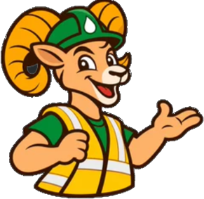

Alto al Fuego

Misión Extintor: Identifica, Elige y Apunta.
Aprende a controlar conatos de incendio en aulas, talleres y hogares protegiendo a la comunidad cimarrona mediante el método T.A.P.E.
¿Cómo jugar y combatir el fuego?
1. Diagnostica: Identifica el material que arde para determinar la Clase de Fuego (A, B, C o K).
2. Selecciona: Elige el extintor adecuado en el gabinete evitando agentes peligrosos.
3. Aplica el método T.A.P.E.: Tira del seguro metálico, Apunta a la base del fuego, Presiona la manija y Esparce en barrido continuo.
Recuerda: El fuego se apaga sofocando el combustible en la base, nunca en la punta de las llamas. Mueve el chorro de lado a lado para activar el bono de barrido (×2.0).
Brigadista Experto
Evaluación del simulador de prevención UABC
📋 Tabla de Referencia Rápida UABC
| Clase | Material Combustible | Extintor Recomendado |
|---|---|---|
| 🔥 Clase A | Sólidos: madera, papel, tela, cartón | Agua Presurizada / PQS |
| 💧 Clase B | Líquidos y gases: thinner, gasolina, pinturas | PQS / CO₂ |
| ⚡ Clase C | Equipos eléctricos energizados: cómputo, tableros | CO₂ (Evitar agua) |
| 🍳 Clase K | Aceites y grasas vegetales/animales de cocina | Tipo K (Acetato de Potasio) |